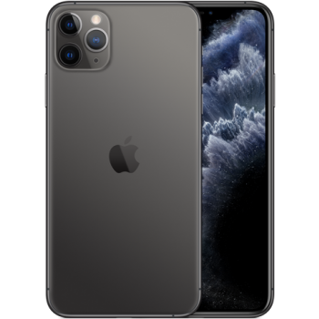
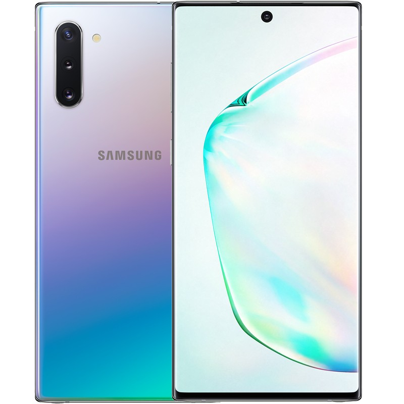

iPhone 6S 32GB chính hãng VN/A là gì? Vì sao khách hàng nên chọn iPhone 6S VN/A
Đầu tiên, iPhone 6S 32GB chính hãng VN/A là hàng chính hãng do Apple sản xuất theo tiêu chuẩn của thị trường Việt Nam. Máy được phân phối chính hãng thông qua các đại lý ủy quyền của Apple. Vậy iPhone 6S chính hãng VN/A có gì khác những mẫu máy iPhone 6S cũ, iPhone xách tay?

iP 6S chính hãng VN/A là hàng mới nên chất lượng hoàn toàn được đảm bảo. Ngoài ra, khi mua iPhone chính hãng VN/A khách hàng sẽ được hưởng gói bảo hành ưu đãi, cụ thể được đổi mới trong vòng 30 ngày tại CellphoneS, bảo hành 1 năm tại các trung tâm bảo hành ủy quyền của Apple. Khi mua máy khách hàng cũng được cung cấp đầy đủ hóa đơn chứng minh nguồn gốc cũng như phụ kiện kèm theo.
Còn khi chọn mua iPhone 6S 32GB cũ thì chất lượng không thật sự được đảm bảo, những loại máy iPhone cũ thích hợp hơn với những khách hàng am hiểu về công nghệ, có kỹ năng kiểm tra máy.
Dung lượng 32GB trên iP 6s chính hãng không quá lớn nhưng vẫn đủ dùng
32GB bộ nhớ trong cùng việc máy không tích hợp thẻ nhớ thì sẽ là một thảm họa với các smartphone Android ngày nay. Nhưng đây sẽ không phải là nỗi lo của các sản phẩm từ Apple. Với hệ điều hành IOS được tối ưu, Apple đã chứng tỏ với khách hàng họ không cần một con số dung lượng lớn nhưng vẫn đáp ứng được nhu cầu sử dụng của người dùng.
Ngoài ra, các sản phẩm từ Apple còn hỗ trợ lưu trữ cho người dùng với hệ thống đám mây iCloud. Bên cạnh đó còn nhiều ứng dụng đến từ Google hỗ trợ lưu trữ nên tuy không quá thoải mái như iPhone 6S 64GB, hay 128Gb nhưng iPhone 6S 32GB vẫn đủ dùng. Khi sử dụng iPhone 6S 32GB bạn có thể thoải mái chụp ảnh, lưu trữ video, tài liệu.
Màn hình IPS LCD cho iPhone 6S khả năng hiển thị tốt
iPhone 6S 32GB với màn hình 4.7 inches, độ phân giải 1334 x 750 pixels chuẩn Reina đạt mật độ điểm ảnh là 326 ppi. Cùng với màn hình cảm ứng điện dung LED - backlit IPS LCD, 16 triệu màu nhờ đó máy cho khả năng hiện thị tốt, chi tiết, rõ ràng, sắc nét với màu sắc hết sức chân thực.
Ngoài ra tấn nền còn có khả năng tăng sáng và tái tạo màu sắc tốt đồng thời cho góc nhìn rộng nhờ đó mà những trải nghiệm về về đồ họa, hình ảnh khi xem phim, chơi game,... sẽ được tái hiện lên trước mắt bạn một cách sống động và nổi bật nhất.
Bộ vi xử lý Apple A9 mạnh mẽ và tiết kiệm năng lượng
iPhone 6S sử dụng bộ vi xử lý Apple A9 APL0898 cho tốc độ 1.8 GHz nên máy có hiệu suất hoạt động mạnh mẽ, ổn định và khá tiết kiệm năng lượng. Kết hợp với đó là chip đồ họa PowerVR GX6450 6 lõi hỗ trợ tối đa cho các tác vụ yêu cầu đồ họa phức tạp (như game 3D, chỉnh sửa ảnh,...).
Cùng với đó là 2GB RAM, một con số mạnh mẽ đối với các sản phẩm chạy hệ điều hành IOS. Nhờ vậy máy cho khả năng tao tác mượt mà, đa nhiệm tốt cũng như khả năng chơi game mượt mà. Đã nhiều năm từ ngày ra mắt nhưng iPhone 6S vẫn đáp ứng tốt mọi nhu cầu sử dụng của bất kỳ ai.
Camera 12MP cho hình ảnh trung thực - sắc nét
Camera sau của iPhone 6S 32GB có độ phân giải 12 MP, khẩu độ f/2.2. Máy có thông số camera không quá cao nhưng được đánh giá là chiếc smartphone cho chất lượng chụp ảnh tốt nhất tại thời điểm ra mắt. Nên máy không chỉ có khả năng chụp ảnh xuất sắc với các chi tiết rõ ràng, màu sắc trung thực. Không những vậy máy còn cho phép người dùng quay được video 4K - gấp 4 lần độ phân giải của chuẩn FullHD 1080p.
Trong khi đó, camera trước có độ phân giải 5 MP - khá đủ để có một tấm ảnh selfie đẹp. Đặc biệt, máy còn được trang bị tính năng Retina Flash, giúp màn hình tự động sáng lên như đèn flash, hỗ trợ người dùng chụp ảnh trong điều kiện thiếu sáng.
iPhone 6S chính hãng được tích hợp các công nghệ tân tiến
Ngoài những ưu việt về phần cứng, điện thoại iPhone 6S còn được trang bị 1 tính năng cao cấp khác có tên gọi là 3D Touch. Công nghệ này cho phép tùy theo lực nhấn lên màn hình của người dùng mà phản hồi những lệnh khác nhau. Ưu điểm của nó là giúp giảm bớt các hoạt động “thừa” nhưng vẫn đảm bảo được việc người dùng sử dụng được chức năng của ứng dụng một cách liền mạch, không bị gián đoạn.
Bên cạnh đó thì bảo mật cũng là điểm ấn tượng trên iPhone 6S. Với cảm biến vân tay Touch ID hỗ trợ người dùng truy cập vào điện thoại một cách an toàn và nhanh chóng. Ngoài ra cảm biến vân tay còn cho phép bạn có thể mua hàng một cách tiện lợi trên iTunes, App Store,... mà không cần phải nhập mật khẩu
iPhone 11 Pro Max có kích thước to hơn với chất liệu thép không gỉ bền bỉ
iPhone 11 Pro Max có thiết kế tương tự như iPhone 11 Pro nhưng kích thước thì to hơn với kích thước màn hình 6.5 inch và toàn bộ máy có kích thước 158 x 77.8 x 8.1 mm. Thiết kế không có nhiều thay đổi trừ hệ thống camera sau được nâng cấp thành 3 camera. Màn hình tai thỏ vẫn được giữ nguyên và chất liệu thép không gỉ giúp iPhone 11 Pro Max bền bỉ hơn.
Đối với Series iPhone 11, Apple đã bỏ đi mặt kính ở mặt lưng và thay bằng chất liệu mờ mang đến cảm giác sờ thích hơn cũng như hạn chế trầy xước, bám vân tay. Các màu sắc của iPhone 11 Pro Max cũng lạ hơn so với các người anh em tiền nhiệm trước đây với các màu xám, vàng, bạc và xanh bóng đêm.
Màn hình 6.5 inch, công nghệ màn hình Super Retina XDR cho khả năng hiển thị tuyệt vời
iPhone 11 Pro Max có màn hình lớn với kích thước màn hình 6.5 inch, độ phân giải 1242 x 2688 pixels cho hình ảnh hiển thị sắc nét. Màn hình đạt chuẩn Super Retina XDR mang đến khả năng hiển thị tuyệt vời, hình ảnh chân thật, màu sắc sinh động, độ tương phản màu cao, hình ảnh chi tiết cao. Với màn hình của iPhone 11 Pro Max, bạn có thể tận hưởng những bộ phim hấp dẫn, các game đỉnh cao với chất lượng hình ảnh vô cùng tuyệt vời.
Tấm nền OLED sẽ giúp cho iPhone 11 Pro Max có màu sắc hiển thị đẹp hơn và sát với thực tế, có thể nói là thực hơn bao giờ hết. Ở iPhone 11 Pro Max, có thể thấy Apple đã chăm chút rất nhiều cho hình ảnh hiển thị đến với người dùng tốt nhất, hoàn hảo nhất.
Hệ thống 3 camera 12MP sau được nâng cấp chính là điểm nổi bật ở iPhone 11 Pro Max
Apple đã nâng cấp hệ thống camera cho iPhone 11 Pro Max thành cụm 3 camera và được đặt gọn trong một hình vuông. Với 1 camera góc siêu rộng mà ở các thế hệ iPhone trước đây chưa từng có, giúp cho khả năng chụp ảnh của iPhone 11 Pro Max đỉnh hơn và chuyên nghiệp hơn.
Hệ thống 3 camera có cùng thông số cảm biến là 12MP vì thế hình ảnh được chụp từ iPhone 11 Pro Max vô cùng sắc nét và ấn tượng. Khả năng chụp ảnh ở điều kiện thiếu sáng tốt hơn, phạm vi zoom được mở rộng, cảm biến chiều sâu 3D mang đến hình ảnh như được chụp từ các máy ảnh chuyên nghiệp, vô cùng chất lượng, sắc nét. Bên cạnh đó camera trước 12MP TrueDepth với công nghệ IR và RBG cho khả năng nhận diện ánh sáng tốt hơn, mang đến ảnh selfie đẹp và rực rỡ hơn.
Cấu hính mạnh mẽ với chip A13 Bionic, RAM đến 6GB xử lý nhanh chóng mọi tác vụ và chạy hệ điều hành iOS 13
Con chip A13 Bionic là một bộ vi xử lý tuyệt vời, mang sức mạnh vượt trội hơn hẳn chip A12 cũ. Được trang bị con chip A13, iPhone 11 Pro Max sở hữu cấu hình mạnh mẽ, ấn tượng và kèm với RAM dung lượng đến 6GB, mọi thao tác tác vụ iPhone 11 Pro Max đều có thể xử lý nhanh chóng, cho bạn trải nghiệm mượt mà, ổn định tất cả các tác vụ, đa nhiệm.
iPhone 11 Pro Max chạy hệ điều hành iOS 13 và đây cũng là hệ điều hành đang thu hút nhiều sự chú ý từ phía truyền thông cũng như cộng đồng yêu công nghệ. iOS 13 chính là nền tảng cơ bản để iPhone 11 Pro Max có thể phát huy những tính năng, sức mạnh nổi bật của mình. iPhone 11 Pro Max có bộ nhớ trong 64GB vì vậy bạn có thể lưu trữ nhiều dữ liệu, tập tin hình ảnh. Ngoài ra iPhone 11 Pro Max còn có phiên bản iPhone 11 Pro Max 256GB và iPhone 11 Pro Max 512GB dành cho ai có nhu cầu lưu trữ cao, tận dụng tối đa bộ nhớ điện thoại.
FaceID trên iPhone 11 Pro Max được nâng cấp cho bảo mật an toàn, mở khóa nhanh hơn
Tính năng nhận diện khuôn mặt FaceID vẫn được ứng dụng cho iPhone 11 Pro Max để bạn có thể sử dụng điện thoại an toàn hơn. Khả năng nhận diện khuôn mặt chuẩn xác với camera hồng ngoại vì vậy bạn có thể yên tâm về độ bảo mật trên iPhone 11 Pro Max. Với FaceID, bạn có thể nhanh chóng mở khóa đăng nhập vào điện thoại mà không cần phải nhập mật khẩu cho mỗi lần đăng nhập.
Dung lượng pin 3500 mAh, công nghệ sạc ngược không dây tối ưu khả năng sử dụng
Pin của iPhone 11 Pro Max có dung lượng 3500 mAh, lớn hơn pin của iPhone Xs Max chỉ có 3174 mAh vì thế iPhone 11 Pro Max mang đến thời gian sử dụng lâu hơn. Bên cạnh đó, sự hỗ trợ từ chip A13 Bionic còn giúp thời lượng pin tăng lên chính vì thế bạn sẽ có thể trải nghiệm điện thoại lâu hơn, nghe nhạc, xem phim, chơi game, làm việc...trong thời gian dài hơn.
iPhone 11 Pro Max còn được trang bị công nghệ sạc nhanh 18W, công nghệ sạc ngược không dây giúp bạn chia sẻ pin cho các thiết bị Apple khác. Với công nghệ sạc nhanh, bạn có thể nạp lại ngay 50% pin cho iPhone của mình chỉ trong 30 phút. Giờ đây bạn có thể sử dụng điện thoại mọi lúc mà không còn lo tình trạng hết pin cũng như phải chờ đợi sạc lâu.
Điện thoại Samsung Galaxy Note 10
Với hàng loạt những siêu phẩm từng tung ra thị trường, Samsung lại một lần nữa làm cộng đồng người yêu công nghệ phải đứng ngồi không yên khi trình làng bộ đôi Samsung Galaxy Note 10 và Samsung Galaxy Note 10 Plus mang đến những trải nghiệm tuyệt đỉnh như máy tính ngay từ chính chiếc smartphone của bạn, giúp bạn có thể làm mọi thứ chỉ bằng một chiếc điện thoại
Samsung Galaxy Note 10 mang phong cách thiết kế vuông vắn, kích thước 71.8 x 151 mm và độ mỏng chỉ 7.9mm. Với khung điện thoại được làm từ chất liệu thép không gỉ kết hợp với thủy tinh cao cấp được đánh bóng cho khả năng bắt sáng tạo nên ánh quang cùng lớp kính cường lực Gorilla 6 mang đến sự bảo vệ vừng chắc cho Samsung Galaxy Note 10. Các chi tiết, đường nét được gia công tinh tế, tỉ mỉ mang đến sự hoàn hảo cho vẻ ngoài của chiếc smartphone siêu phẩm này. Khả năng kháng bụi, kháng nước chuẩn IP68 mang đến sự bền bỉ, bảo vệ điện thoại khỏi các hư hại do bụi và nước gây ra.
Với sự trở lại lần này, Samsung mang đến cho cộng đồng fan và những người yêu công nghệ 3 phiên bản màu của Samsung Galaxy Note 10 đó là màu Ánh Cực Quang, Đen Pha Lê và Hồng Ruby cho bạn có nhiều sự lụa chọn phù hợp với phong cách của bản thân. Đặc biệt ở phiên bản màu Ánh Cực Quang, bạn sẽ nhìn thấy sự chuyển màu theo góc độ ánh sáng mang đến sự mới lạ và hợp xu hướng hiện đại.
Màn hình vô cực 6.3 inch Infinity-O Full HD+ và tấm nền Dynamic AMOLED
Màn hình không viền kích thước lớn 6.3 inch với tấm nền Dynamic AMOLED mở ra không gian hiển thị chuẩn điện ảnh và cực kỳ sống động, màu sắc tươi sáng ở tất cả các sắc độ và luôn được tối ưu độ thoải mái dành cho mắt thường, giúp bạn xem những bộ phim hấp dẫn, chơi game,…một cách tuyệt vời nhất dù đang ở bất cứ điều kiện ánh sáng nào. Với công nghệ điều chỉnh dải màu sắc chuẩn HDR 10+ cho bạn đắm chìm vào không gian hiển thị hoàn hảo.
Giờ đây, việc bảo vệ mắt người dùng cũng được Samsung quan tâm khi giảm tối đa mức phát ánh sáng xanh giúp việc sử dụng smartphone lâu dài không còn gây mỏi mắt, giảm thiểu sự gây hại lên mắt người dùng mà vẫn giữ màu sắc phong phú bao phủ 100%.
Hiệu năng mạnh mẽ từ chip Exynos 9825 và RAM 8GB tận dụng điện thoại cho mọi tác vụ
Sức mạnh của Samsung Galaxy Note 10 đến từ con chip Samsung Exynos 9825 8 nhân tốc độ 2.8GHz Kryo, GPU Mali-G76 với dung lượng RAM 8GB cho khả năng xử lý nhanh vượt trội, xử lý các thao tác đa nhiệm trong nháy mắt, mang đến cho bạn trải nghiệm làm việc, lướt web, xem phim, chơi game,… mượt mà và mạnh mẽ kể cả những game có cấu hình đồ họa cao. Thêm vào đó tính năng thực tế ảo AR kết hợp với màn hình Infinity-O mang đến những trải nghiệm game tuyệt vời hơn cho người dùng. Với bộ nhớ trong 256GB, giờ đây việc lưu trữ dữ liệu trên điện thoại của bạn đã không còn bị giới hạn, lưu trữ nhiều hơn với sức chứa tương đương một chiếc ổ cứng máy tính.
Cụm 3 camera sau độ cảm biến cao, khẩu độ kép f/1.5 và f/2.4 và camera trước 10MP bắt trọn khoảnh khắc
Samsung Galaxy Note 10 sở hữu hệ thống camera sau gồm 3 camera với độ cảm biến cao lần lượt là camera góc siêu rộng 16MP, camera góc rộng 12MP và camera tele 12MP cùng với công nghệ chuyên nghiệp được tích hợp như siêu chống rung, hiệu ứng chuyên nghiệp, cảm biến chiều sâu, dựng video chuyên nghiệp,…biến điện thoại thành một máy quay cầm tay giúp bạn ghi lại mọi khoảnh khắc, bắt nhịp những tấm ảnh, thước phim thật sống động. Camera của Galaxy Note 10 còn có khẩu độ kép với khẩu độ f/1.5 và d/2.4 giúp hình ảnh được bắt sáng tốt hơn, ảnh rõ nét và luôn được tối ưu hóa ở mọi điều kiện ánh sáng khác nhau. Camera trước được đặt trên màn hình với độ cảm biến 10MP được nâng cấp giúp chụp ảnh trong điều kiện thiếu sáng tốt hơn. Vị trí đặt camera hợp lý giúp cho mắt nhìn được tự nhiên nhất, những bức ảnh selfie trở nên có hồn hơn, biến những tấm ảnh selfie của bạn thành những tuyệt tác chân dung.
Pin 3500mAh tích hợp công nghệ sạc nhanh và tính năng chia sẻ pin không dây
Với thiết kế hoàn hảo, camera ấn tượng và hiệu năng vô cùng mạnh mẽ thì pin và thời lượng pin cũng là yếu tố quan trọng ảnh hưởng đến trải nghiệm Samsung Note 10. Dung lượng pin 3500mAh là dung lượng pin lớn nhất trong dòng Galaxy Note được áp dụng công nghệ pin thông minh có thể tự động điều chỉnh mức pin tiêu thụ dựa theo thói quen sử dụng điện thoại của người dùng để có thể sử dụng suốt cả ngày dài. Công nghệ sạc siêu nhanh 25W được tích hợp giúp bạn nạp năng lượng cho cả ngày sử dụng chỉ với 30 phút sạc. Samsung Galaxy Note 10 còn sở hữu tính năng sạc không dây chuẩn Qi cho phép thiết bị chia sẻ năng lượng với các thiết bị khác hỗ trợ Qi, chia sẻ năng lượng với mọi người thuận tiện và dễ dàng hơn.
Công nghệ âm thanh Dolby Atmos sống động và khả năng kết nối với máy tính
Samsung Galaxy Note 10 được trang bị công nghệ âm thanh Dolby Atmos mang đến âm thanh chân thực, sống động và âm thanh vòm chuẩn 3D. Với công nghệ âm thanh này, bạn sẽ tha hồ chìm đắm trong những bài hát hay, những bộ phim, những trận game hấp dẫn, mang đến không gian âm thanh tuyệt vời. Khả năng kết nối màn hình ngay trên máy tính với Samsung DeX giúp các thao tác với tập tin nhanh hơn, chỉnh sửa hình ảnh, video clip trên màn hình lớn đơn giản hơn. Bên cạnh đó bạn còn có thể đồng hóa hình ảnh, tin nhắn, thông báo,… từ điện thoại của bạn sang máy tính với tính năng screen mirroring giúp bạn sử dụng máy tính và điện thoại tốt hơn.
S Pen được thiết kế tối giản hơn tích hợp nhiều cử chỉ thông minh
Với thiết kế thanh lịch, tối giản, chiếc S Pen của Samsung Galaxy Note 10 mang đến sức mạnh đa nhiệm ngay trong tay bạn. Bút dễ vẽ hơn, mọi chuyển động mượt mà, trơn tru và cảm giác sử dụng thoải mái, thời lượng pin lâu hơn cho trải nghiệm tuyệt vời hơn. S Pen còn có khả năng chuyển chữ viết tay của bạn thành văn bản mà bạn có thể sao chép, dán, chia sẻ,… Bên cạnh khả năng ghi chú, S Pen còn là đóng vai trò như một điều khiển từ xa thông qua kết nối bluetooth giúp bạn có thể chuyển slide với một chạm, chụp ảnh, phát và tạm dừng video, điều khiển thông qua những cử chỉ đơn giản như chuyển camera, xem hình ảnh trong thư viện, tăng hoặc giảm âm lượng,…và còn nhiều hơn nữa vẫn chờ bạn khám phá.